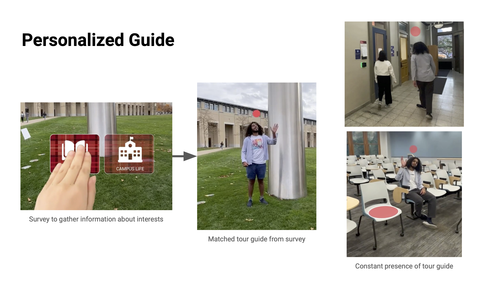

Final Tour Experience

Interaction 1
Schedule

Interaction 2
Personalized Guide
A survey is provided at the beginning of the experience to
gather information about the user’s interests, which is then
used to create a match for a tour guide. This tour guide stays
with the user throughout the experience, acting as a guide
around the campus.

Interaction 3
Personal Anecdotes